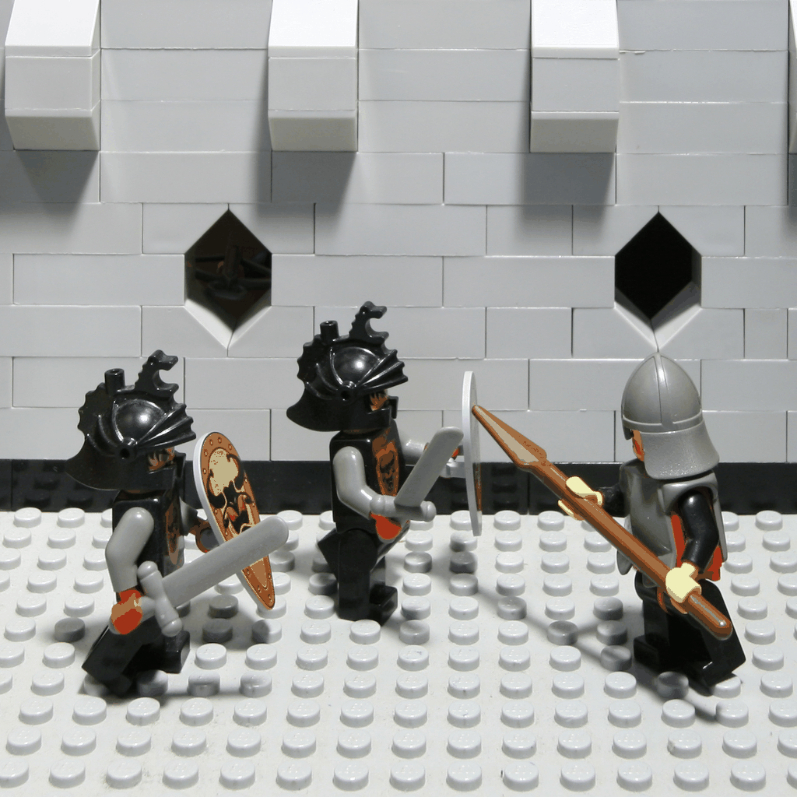
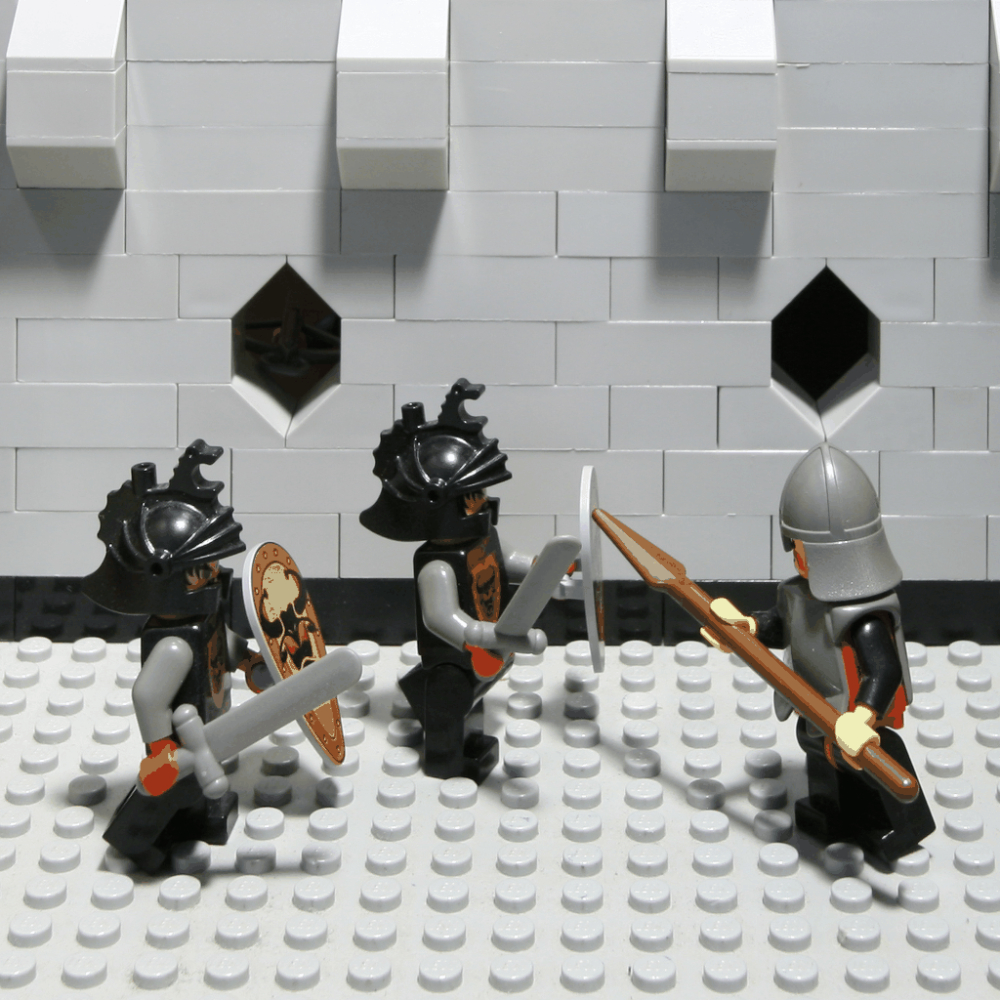
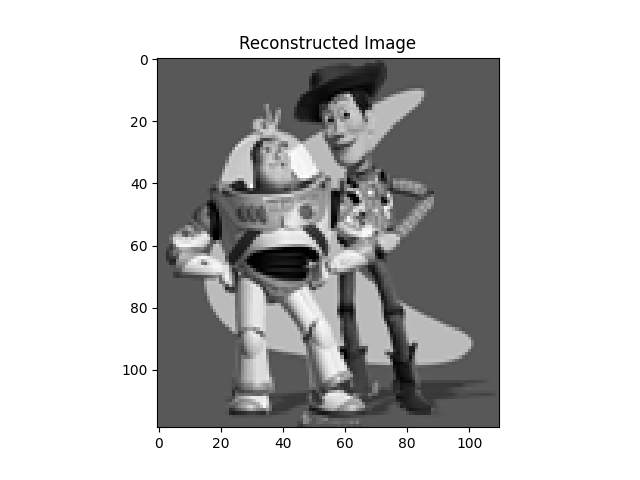
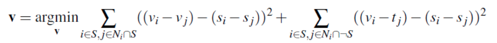
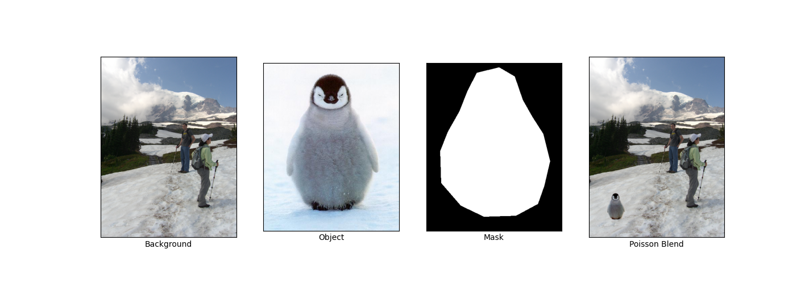
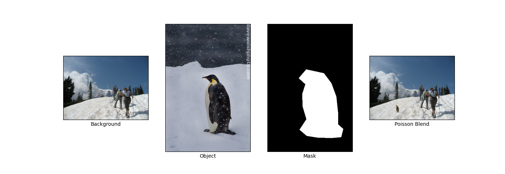
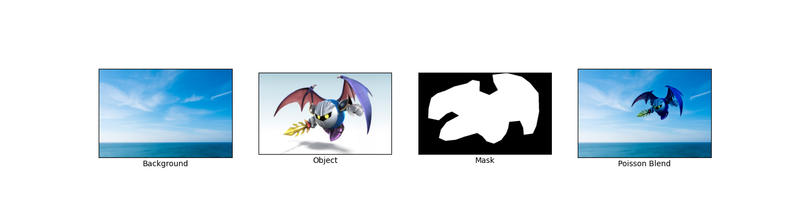
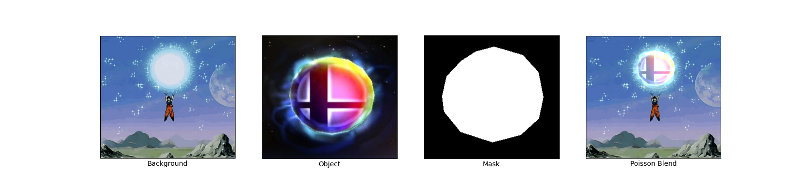
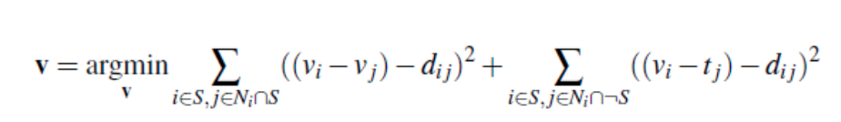
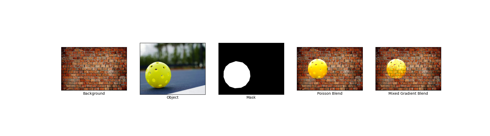

CS 180: Final Project
Albert Wang
For the Final Project, there will be two separate subprojects: Lightfield Camera and Gradient Domain Fusion
Lightfield Camera
This project explores how lightfield data can be processed to simulate visual effects like depth refocusing and aperture adjustment. Using a dataset of sub-aperture images arranged in a 17x17 grid, we demonstrate how simple image manipulations like shifting and averaging allow us to produce different effects on the overall image. This lightfield data is taken from Stanford's Light Field Archive.
Part 1: Depth Refocusing
Depth refocusing leverages the variation in how objects appear across the lightfield grid based on their distance from the camera. Objects closer to the camera shift more significantly between images compared to distant objects when the camera's optical axis remains unchanged.
To refocus: Each sub-aperture image (u,v) is shifted by C × (v - vc, u - uc), where (uc, vc) is the center image coordinate. These shifted images are averaged together, creating a new image focused at a specific depth determined by the constant C. I used C ranging from -2 to 1.6 to generate the GIFs below. As C changes, the apparent focus plane shifts, creating a refocusing effect.


Part 2: Aperture Adjustment
We can simulate readjusting the aperture by averaging different subsets of images in the dataset. Aperture adjustment simulates changes in the camera's aperture size by controlling how many images from the lightfield are averaged. Larger apertures result in more focused images at a specific depth, while smaller apertures create a broader focus.
To adjust the aperture, A radius r defines the maximum allowable distance from the center image for sub-aperture inclusion. Images within this radius are shifted using the same method as depth refocusing and then averaged.
Here is the GIF is generated by using r from range 0 to 15, with a constant C value of -0.15. The result shows the gradual effect of increasing aperture size on focus depth.
 

Summary
This project helped me understand how lightfields capture rich information about light in a scene, enabling the simulation of camera effects like adjusting focus and aperture. It was fascinating to see how simple operations created multiple different effects.
Gradient Domain Fusion
This project explores gradient-domain image processing, a powerful technique for blending images together. Unlike in project 2, which focused on pixel intensity, this project focuses on matching gradients.
Part 1: Toy Problem
Before implementing Poisson Blending, we tackled a toy problem to verify our understanding of gradient reconstruction. The objective was to reconstruct an image using only its gradients in the x and y directions and a single known pixel value.
- Gradient Matching: The x and y gradients of the reconstructed image v(x, y) were constrained to match the gradients of the original image s(x, y): This involves minimizing ( v(x+1,y) - v(x,y) - [s(x+1,y) - s(x,y)] )2 (x-gradient) and minimizing ( v(x,y+1) - v(x,y) - [s(x,y+1) - s(x,y)] )2 (y-gradient)
- Intensity Constraint: To ensure a unique solution, we added a constraint to fix the intensity of the top-left pixel: Minimize ( v(1,1) - s(1,1) )2
-
System Setup: These constraints were combined into a sparse linear system of equations, represented in the form Av = b, where:
- A: Sparse matrix encoding the gradient constraints
- v: The flattened array of the reconstructed image
- b: Gradient values derived from the source image
- Solution: Using least squares, the system was solved to compute v, which was then reshaped back into the reconstructed image. The reconstructed image closely matched the original, confirming the validity of the approach.
Here is the original toy image and the reconstructed image:
The max error between the two images is 0.0010002051356807207.
Part 2: Poisson Blending
Poisson Blending enables seamless blending of a source image region (e.g., an object) into a target image (e.g., a background) by preserving the gradients of the source region while matching the intensities of the target region around the boundary. The process follows these steps:
- Region Selection: Define the source region and its placement on the target image. This is done using a polygonal mask for the source image and an insertion point for the target.
-
Gradient Matching: Solve for the pixel intensities in the source region by enforcing that the gradients in the blended result closely match the source gradients, while maintaining consistency with the target image outside the selected region. Mathematically, the optimization problem was defined as:
 - Optimization: Represent the problem as a sparse system of linear equations (Av = b), where A enforces gradient constraints and b captures known intensity values. The system is solved using sparse linear solvers.
Here are some results:
  My favorite result, which shows Goku charging up a Smash Ball:
Bells and Whistles: Mixed Gradients
Mixed Gradients is similar to Poisson blending, but we use the gradient in source or target with the larger magnitude as the guide, rather than always using the source gradient:
Here "dij" is the value of the gradient from the source or the target image with larger magnitude. Specifically, if |si - sj| > |ti - tj|, then dij = si - sj; else dij = ti - tj. This ensures that the gradients in the blended result maintain the most visually significant changes, whether from the source or the target.
Here's the result of using mixed blending:
Reflection
I was able to create some really cool blends by preserving image gradients. The blends were pretty seamless for certain image pairs.